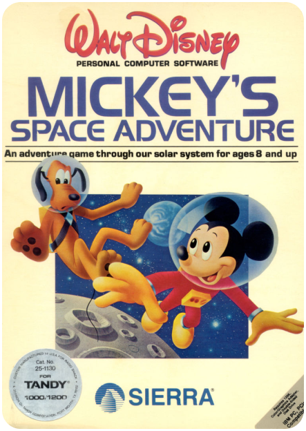

Roberta Williams
Née en 1953 aux Etats-Unis.
Conceptrice de jeux vidéos.
Elle a écrit le premier jeu d’aventure graphique, Mystery House, auquel son mari programmeur a ajouté les graphismes en noir et blanc.
Depuis ont fondé leur Start-up Sierra On-line.

Mystery House

Mickey's Space adventure

King's Quest